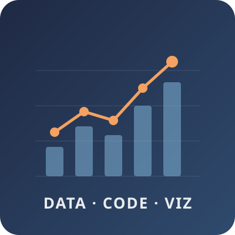

Data Science · ML Engineering
I build end-to-end AI systems, from LLM agents and RAG pipelines to data infrastructure and evaluation.

I'm a Data Science master's student at UC San Diego (expected December 2026) and a Student Build and Release Engineer with UCSD IT Services.
Before grad school I spent two and a half years at IBM, where I shipped an LLM-based agent that routed CI/CD test runs and cut compute costs by 40%. Before that I did NLP and speech research at Samsung PRISM. Most recently, my team took 2nd place in the Cloud Track at DataHacks 2026 with GridGreen, a carbon-aware ML copilot.